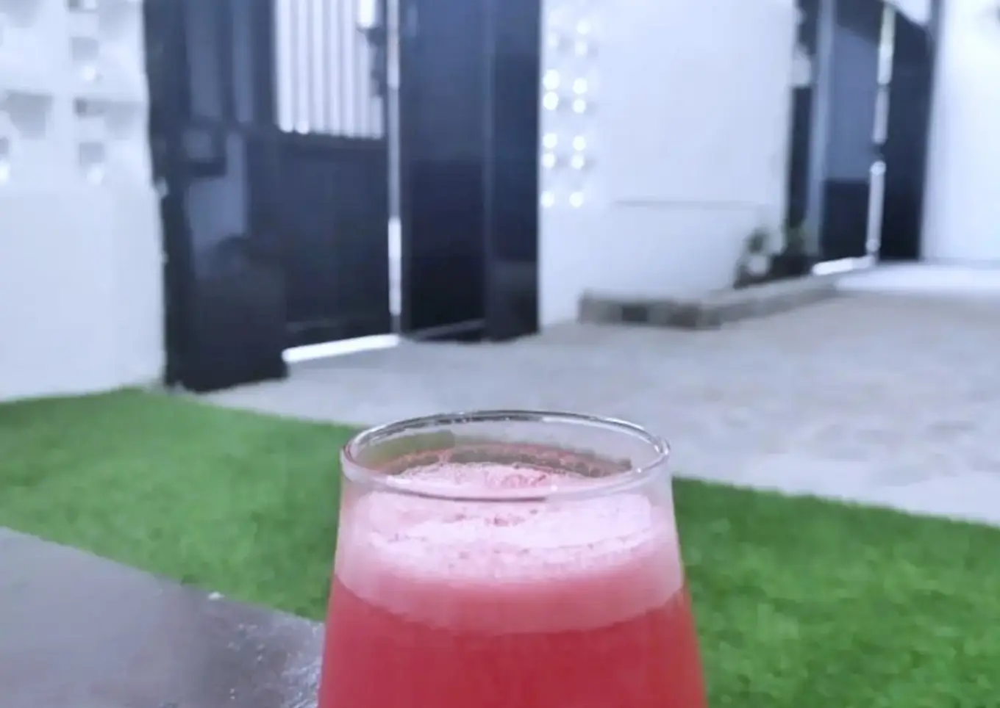

Jus Semangka

Description
Pure Watermelon Juice
Ingredients :
- 250 gram semangka
- 150 ml air dingin
Steps :
- Potong semangka.
- Masukkan ke dalam blender. Tambahkan air. Blender hingga halus.
- Tuang jus ke dalam botol masukkan ke dalam chiller supaya dingin. Sajikan dingin lebih nikmat.